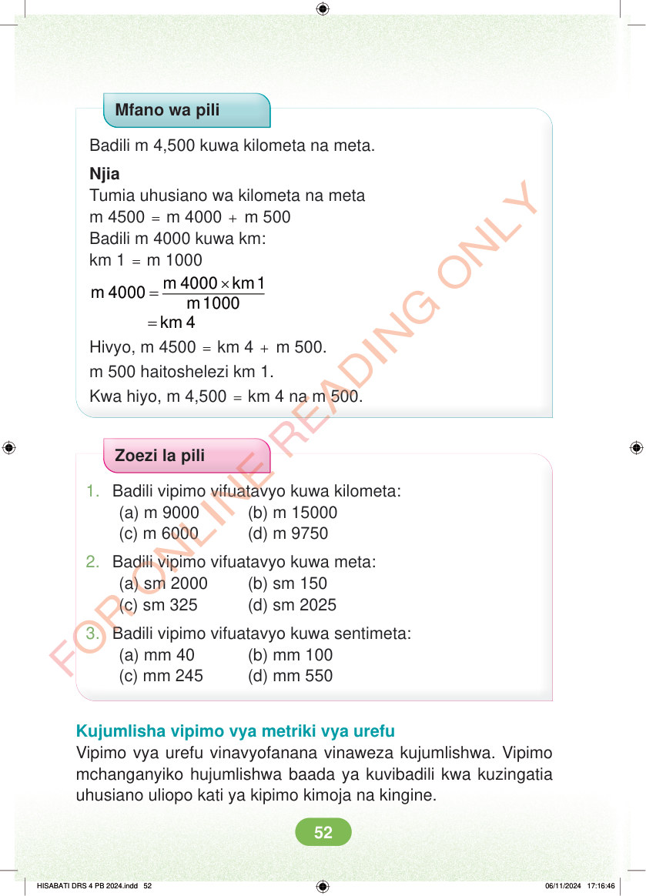

Mfano wa pili Badili m 4,500 kuwa kilometa na meta. Njia Tumia uhusiano wa kilometa na meta m 4500 = m 4000 + m 500 Badili m 4000 kuwa km: km 1 = m 1000 × = = m 4000 km 1 m 4000 m 1000 km 4 Hivyo, m 4500 = km 4 + m 500. m 500 haitoshelezi km 1. Kwa hiyo, m 4,500 = km 4 na m 500. Zoezi la pili 1. Badili vipimo vifuatavyo kuwa kilometa: (a) m 9000 (b) m 15000 (c) m 6000 (d) m 9750 2. Badili vipimo vifuatavyo kuwa meta: (a) sm 2000 (b) sm 150 (c) sm 325 (d) sm 2025 3. Badili vipimo vifuatavyo kuwa sentimeta: (a) mm 40 (b) mm 100 (c) mm 245 (d) mm 550 Kujumlisha vipimo vya metriki vya urefu Vipimo vya urefu vinavyofanana vinaweza kujumlishwa. Vipimo mchanganyiko hujumlishwa baada ya kuvibadili kwa kuzingatia uhusiano uliopo kati ya kipimo kimoja na kingine. HISABATI DRS 4 PB 2024.indd 52 HISABATI DRS 4 PB 2024.indd 52 06/11/2024 17:16:46 06/11/2024 17:16:46